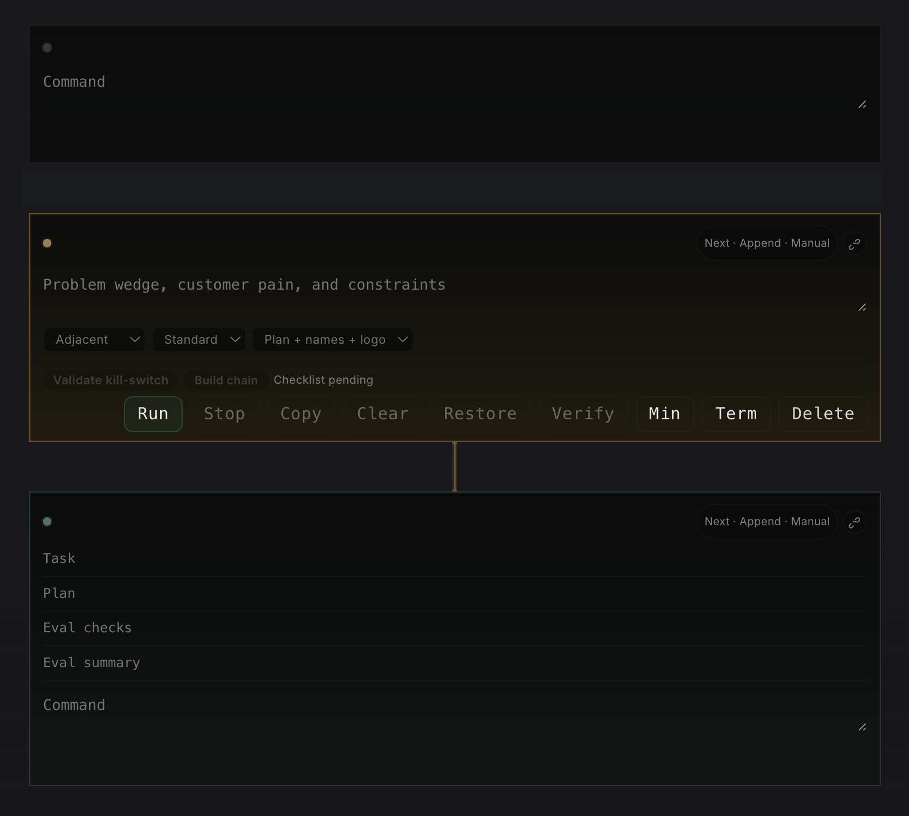

Portal Long-Term Memory Over SSH, Kubernetes, and S3
In the last post, Why AI Coding Tools Still Feel Stuck on Localhost, I argued that most AI products fail once work moves beyond one laptop. Memory is part of that same problem. If context cannot follow the operator across hosts, the assistant is still trapped in one window.
Portal treats long-term memory as durable profile state, not as a longer chat transcript. That distinction
matters. A transcript can summarize what was said. It cannot reliably carry API keys, endpoint maps, tool
defaults, local caches, or execution-specific context across ssh sessions and Kubernetes jobs.
In Portal, a profile such as researcher, scientist, or devops is a
portable working envelope. It can include model/provider selection, API keys, cluster targets, shell
defaults, and other sensitive runtime settings. Each active host keeps a local database for fast reads and
writes, while an S3-mounted share acts as the sync layer between machines. The result is simple: move the
work, keep the profile.
Why local database first
Local state is not an implementation detail. It is the only way to make memory feel operational instead of fragile. Reads stay fast, profile activation works even if the network is noisy, and the runtime can update small pieces of state without rebuilding a full prompt. This is also where secret material is staged before the tool opens a remote shell, attaches to a pod, or starts an agent job.
S3 is not used as a replacement for local state. It is the handoff plane. When a profile changes on one host, Portal writes to the local database, syncs the updated secret and metadata set into the mounted S3 share, and lets other hosts reconcile from the same source. That makes profile behavior consistent across laptop, SSH node, and Kubernetes-backed execution.
Secrets become part of continuity
This is the practical part many AI products avoid. Long-term memory is only useful if sensitive information can move safely with the workload. Portal copies and syncs API keys and other secret material as part of the profile, so the same persona can operate on different hosts without manual re-entry or private copy-paste loops. The memory unit is the profile, not the browser tab.
That also keeps prompts smaller and more deterministic. The model does not need to "remember" where the
profile lives or which credential belongs to which tool. Portal resolves that in the control plane, mounts
the right secret set for the active profile, and exposes the same identity whether execution happens over
ssh or through the Kubernetes API.
Notes cells turn memory into a working notebook
Long-term memory is not only secrets and profile state. It is also the working document around the task. As argued in the previous Portal post, Why AI Coding Tools Still Feel Stuck on Localhost, the interface has to match how operators really work. Portal's notes section should behave more like Jupyter than like a chat transcript: a page made of ordered, typed cells that each have a clear role. The point is not decoration. Each cell type exists because it carries a different part of the operating context.
-
Researchcells are Portal's hypothesis and checklist layer. They exist to turn a vague topic into a research brief that can be reviewed, checked, and applied back into the note instead of staying as loose chat output. -
Red Pencilcells are the adversarial editing layer. In the codebase they run asredpenciland audit a draft for faults, unsupported claims, weak structure, and repair suggestions before the result is applied. -
Debatecells are the discussion cells in practice. Portal names themdebate, and they force a Pro case, Con case, Critic synthesis, final recommendation, and unresolved risks so discussion produces a decision trail instead of vibes. -
Ideacells are not only brainstorming widgets. The implementation validates kill criteria and can build a downstream chain into linkedresearch,risk, andexecutioncells, so one startup thesis or operating idea can fan out into real follow-up work. -
Terminalcells preserve the exact command, output, exit code, duration, host context, and artifacts. They are needed for replay, debugging, and auditability, and they map directly to Portal's note cell execution APIs. -
Agentcells run the actual work. They are needed when execution must move to the right surface, whether that is the current machine, a remote host overssh, or an autoscaled Kubernetes pod. In Portal the structured agent path carries explicitplan,verify, andexplainfields instead of hiding that contract inside prose. -
VerifyandEvalare first-class review layers around those cells. The note cell runtime storesverify_status, while the eval harness is designed to run dataset-driven regression checks against note cells and capture structured evidence before rollout.
The useful part is how these cells link together. An idea cell can create the downstream
research, risk, and execution chain directly. A
research cell can produce a brief that feeds a debate cell. A
redpencil cell can take routed draft text and push an audited weakness map back into the same
notebook. Then terminal and agent cells provide the execution trace, while
verify fields and eval runs turn outputs into something you can actually gate, review, and
compare over time. That is much closer to a real operating notebook than a single prompt box.

This is similar to Jupyter notebooks in the important way: the document is not only prose, it is a graph of
executable and referential blocks. But Portal extends that model for operations. In Jupyter, the kernel is
usually local or attached to a notebook server. In Portal, the agent cell can live somewhere else entirely.
A heavy research cell might run in an autoscaled Kubernetes pod. A deployment-debug cell might run on a
remote Linux host over ssh. The notebook stays in the browser, but execution can move to the
surface that has the right data, network path, and tooling.
That matters because memory becomes portable at two levels at once. The profile carries identity, secrets, and tool defaults. The notebook carries reasoning, evidence, and links between steps. Together they create something much stronger than a saved chat: a durable operating document where cells can be reviewed, reused, and re-run on the right host without losing the thread.
The hard requirement is obvious: this design only works if access control, encryption, and mount scope are treated as first-class parts of the system. But the architectural point is bigger than the storage choice. Long-term memory for remote AI work is not a bigger context window. It is durable, syncable operator state.
Notes need branching and history, not only storage
If notes become an operational surface, they also need a history model closer to Git than to chat. A useful notebook should let an operator branch a line of thought before making a risky change, compare two versions of the same investigation, and return to a known-good state without losing the main thread. One branch might be "debug the production rollout." Another might be "test a safer fix in stage." Both should share the same starting cells, then diverge cleanly as commands, prompts, and outputs change.
This matters because notebook history is not only about text edits. It is also about evidence. If a terminal cell changed because it ran on a different host, the system should preserve that fact. If an agent cell was re-run in a different Kubernetes pod, the notebook should record the runtime identity, profile, and secret context used for that execution. Then a reviewer can diff not only words, but the actual operational path: which cells changed, which outputs were refreshed, and which references stayed stable.
The Git analogy is useful here because it gives operators a familiar model: branch, diff, merge, tag, and restore. But the unit is not only a file. It is a linked set of cells with execution history. That makes long-term memory much more trustworthy. You can fork an idea, test it remotely, merge only the parts that worked, and keep a readable history of how the final result was produced.
The previous post argued that serious AI tooling needs to escape localhost. Shared profile memory is one of the missing pieces. Without it, every remote hop forces the operator to rebuild identity, tools, and secrets by hand.
Resume / CV: https://avkcode.github.io/resume.html.
I'm open to job opportunities. If you'd like to talk, email me at antonvkrylov@gmail.com.